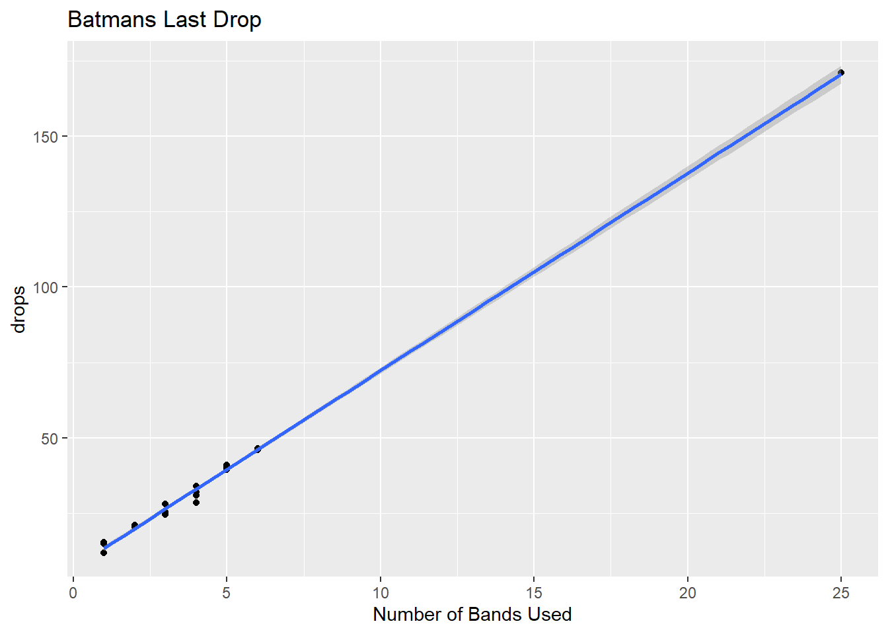

The Barbie Bungee Activity was performed during March 2023 Immersion.
You need: 1. Dropper, 2. Spotter, 3. Recorder
STEP 1 … GATHER THE DATA
# DATASET ####
bungee <- data.frame(bands = c(1,1,1,1, 2,2,2, 3,3,3,3, 4, 4,4,4, 5,5,5,5, 6,6,6,6),
drops = c(15.5, 15, 12, 15, 21, 21, 20.5, 25.5, 25.5, 24.5, 28, 31, 28.5, 32, 34, 39.5, 40, 40.25, 41, 46, 46.5, 46.5,46))
bungee2 <- data.frame(bands = c("One", "One", "One", "One", "Two", "Two", "Two", "Three", "Three", "Three", "Three", "Four", "Four", "Four", "Four", "Five", "Five", "Five", "Five", "Six", "Six", "Six", "Six"),
drops = c(15.5, 15, 12, 15, 21, 21, 20.5, 25.5, 25.5, 24.5, 28, 31, 28.5, 32, 34, 39.5, 40, 40.25, 41, 46, 46.5, 46.5,46))Step 2: Create a fully labeled scatter plot in R (preferably with ggplot) and paste it in the box below.
# Visual Plot ####
bungee2 %>% ggplot(aes(x = reorder( bands, drops), y = drops, color = bands)) +
geom_point() +
geom_smooth(method = "lm") +
xlab("Number of Bands Used")## `geom_smooth()` using formula = 'y ~ x'#bungee$bands = as.character(bungee$bands)
# str(bungee)
# PLOT | Regresion Line ####
bungee %>% ggplot(aes(x = reorder( bands, drops), y = drops, color = bands)) +
geom_point() +
geom_smooth(method = "lm") +
xlab("Number of Bands Used")## `geom_smooth()` using formula = 'y ~ x'# PLOT | Regression Line | Title ####
bungee %>% ggplot(aes(x = bands, y = drops)) +
geom_point() +
geom_smooth(method = "lm") +
xlab("Number of Bands Used") +
ggtitle("Batmans Last Drop")## `geom_smooth()` using formula = 'y ~ x'Step 3: Conduct a hypothesis test to test the claim that the linear correlation coefficient / slope is different than zero. Show all 6 steps! Fill in the blanks:
Was the linear correlation significantly different than zero? How do you know?
# ALL STEPS COMPARED
fit <- lm(drops ~ bands, bungee2)
summary(fit)##
## Call:
## lm(formula = drops ~ bands, data = bungee2)
##
## Residuals:
## Min 1Q Median 3Q Max
## -2.8750 -0.3750 0.0625 0.6250 2.6250
##
## Coefficients:
## Estimate Std. Error t value Pr(>|t|)
## (Intercept) 40.1875 0.6822 58.905 < 2e-16 ***
## bandsFour -8.8125 0.9648 -9.134 5.74e-08 ***
## bandsOne -25.8125 0.9648 -26.753 2.46e-15 ***
## bandsSix 6.0625 0.9648 6.283 8.25e-06 ***
## bandsThree -14.3125 0.9648 -14.834 3.69e-11 ***
## bandsTwo -19.3542 1.0421 -18.571 1.00e-12 ***
## ---
## Signif. codes: 0 '***' 0.001 '**' 0.01 '*' 0.05 '.' 0.1 ' ' 1
##
## Residual standard error: 1.364 on 17 degrees of freedom
## Multiple R-squared: 0.9887, Adjusted R-squared: 0.9854
## F-statistic: 298.1 on 5 and 17 DF, p-value: 6.266e-16# CONSOLIDATED
# Switch the order of the Liner Regression Formula
fit <- lm(bands ~ drops, bungee)
summary(fit)##
## Call:
## lm(formula = bands ~ drops, data = bungee)
##
## Residuals:
## Min 1Q Median 3Q Max
## -0.30230 -0.14876 -0.07216 0.15890 0.69737
##
## Coefficients:
## Estimate Std. Error t value Pr(>|t|)
## (Intercept) -1.082714 0.145616 -7.435 2.61e-07 ***
## drops 0.153872 0.004527 33.986 < 2e-16 ***
## ---
## Signif. codes: 0 '***' 0.001 '**' 0.01 '*' 0.05 '.' 0.1 ' ' 1
##
## Residual standard error: 0.2398 on 21 degrees of freedom
## Multiple R-squared: 0.9821, Adjusted R-squared: 0.9813
## F-statistic: 1155 on 1 and 21 DF, p-value: < 2.2e-16## y-Intercept - PVALUE ####
tstat = 7.4502/0.7430 #beta_0_hat / SE(beta_0_hat)
pvalue = (1-pt(tstat,21)) * 2 # Degree of Freedom | Mult. by 2 since 2 sided test
tstat## [1] 10.02719pvalue## [1] 1.847428e-09I reject the null hypothesis that the slope is equal to zero
There is strong evidence to suggest that the linear correlation coefficient is significantly different than zero as the slopes probability is greater than 0.05. I can see that the slope is increasing as we add additional bands to batman. I am 95% confident that as we add a band our drop distance will increase by 4inches
## Slope Six Bands- PVALUE ####
tstat2 = 6.3829/0.1878 #beta_0_hat / SE(beta_0_hat)
pvalue2 = (pt(tstat,21)) * 2 # Degree of Freedom | Mult. by 2 since 2 sided test
tstat2## [1] 33.98775pvalue2## [1] 2confint(fit)## 2.5 % 97.5 %
## (Intercept) -1.3855385 -0.7798891
## drops 0.1444564 0.1632871you have the opportunity to collect a little more information! You may take one more jump but this time we have a longer tape measure. Simply choose the number of rubber bands you want to test and line up to collect your extra data point.
# FIRST PREDICTION ####
fit <- lm(bands ~ drops, bungee)
summary(fit)##
## Call:
## lm(formula = bands ~ drops, data = bungee)
##
## Residuals:
## Min 1Q Median 3Q Max
## -0.30230 -0.14876 -0.07216 0.15890 0.69737
##
## Coefficients:
## Estimate Std. Error t value Pr(>|t|)
## (Intercept) -1.082714 0.145616 -7.435 2.61e-07 ***
## drops 0.153872 0.004527 33.986 < 2e-16 ***
## ---
## Signif. codes: 0 '***' 0.001 '**' 0.01 '*' 0.05 '.' 0.1 ' ' 1
##
## Residual standard error: 0.2398 on 21 degrees of freedom
## Multiple R-squared: 0.9821, Adjusted R-squared: 0.9813
## F-statistic: 1155 on 1 and 21 DF, p-value: < 2.2e-16distance = data.frame(drops = c(144))
str(distance)## 'data.frame': 1 obs. of 1 variable:
## $ drops: num 144The goal would be to use 21 rubber bands and see if the drop is close to 144inches. That will let us know if the model is working.
Which it did…
## PREDICT FIT LINE ####
predict(fit, newdata = distance, interval = "confidence")## fit lwr upr
## 1 21.07482 19.99838 22.15126# DATASET ####
bungee3 <- data.frame(bands = c(1,1,1,1, 2,2,2, 3,3,3,3, 4, 4,4,4, 5,5,5,5, 6,6,6,6, 25),
drops = c(15.5, 15, 12, 15, 21, 21, 20.5, 25.5, 25.5, 24.5, 28, 31, 28.5, 32, 34, 39.5, 40, 40.25, 41, 46, 46.5, 46.5,46, 171))
bungee4 <- data.frame(bands = c("One", "One", "One", "One", "Two", "Two", "Two", "Three", "Three", "Three", "Three", "Four", "Four", "Four", "Four", "Five", "Five", "Five", "Five", "Six", "Six", "Six", "Six", "Twenty Five"),
drops = c(15.5, 15, 12, 15, 21, 21, 20.5, 25.5, 25.5, 24.5, 28, 31, 28.5, 32, 34, 39.5, 40, 40.25, 41, 46, 46.5, 46.5,46, 171))We have measured the distance from the top to the bottom of the Hughes Trigg Bridge! It is 22ft 4 inches. Use your regression equation to estimate the number of rubber bands needed to bungee your super hero or Barbie that distance. The winner will bungee their subject closest to the ground without hitting any body part. Remember that it is ok if hair hits the ground but any other body part (hand, head, etc.) results in death or serious injury to super hero or Barbie and disqualification for you team! J
# SECOND PREDICTION ####
fit <- lm(bands ~ drops, bungee)
summary(fit)##
## Call:
## lm(formula = bands ~ drops, data = bungee)
##
## Residuals:
## Min 1Q Median 3Q Max
## -0.30230 -0.14876 -0.07216 0.15890 0.69737
##
## Coefficients:
## Estimate Std. Error t value Pr(>|t|)
## (Intercept) -1.082714 0.145616 -7.435 2.61e-07 ***
## drops 0.153872 0.004527 33.986 < 2e-16 ***
## ---
## Signif. codes: 0 '***' 0.001 '**' 0.01 '*' 0.05 '.' 0.1 ' ' 1
##
## Residual standard error: 0.2398 on 21 degrees of freedom
## Multiple R-squared: 0.9821, Adjusted R-squared: 0.9813
## F-statistic: 1155 on 1 and 21 DF, p-value: < 2.2e-16distance = data.frame(drops = 272)
str(distance)## 'data.frame': 1 obs. of 1 variable:
## $ drops: num 272## PREDICT FIT LINE 2 ####
predict(fit, newdata = distance, interval = "confidence")## fit lwr upr
## 1 40.77041 38.49146 43.04936# Visual Plot ####
bungee4 %>% ggplot(aes(x = reorder( bands, drops), y = drops, color = bands)) +
geom_point() +
geom_smooth(method = "lm") +
xlab("Number of Bands Used")## `geom_smooth()` using formula = 'y ~ x'# PLOT | Regression Line | Title ####
bungee3 %>% ggplot(aes(x = bands, y = drops)) +
geom_point() +
geom_smooth(method = "lm") +
xlab("Number of Bands Used") +
ggtitle("Batmans Last Drop")## `geom_smooth()` using formula = 'y ~ x'